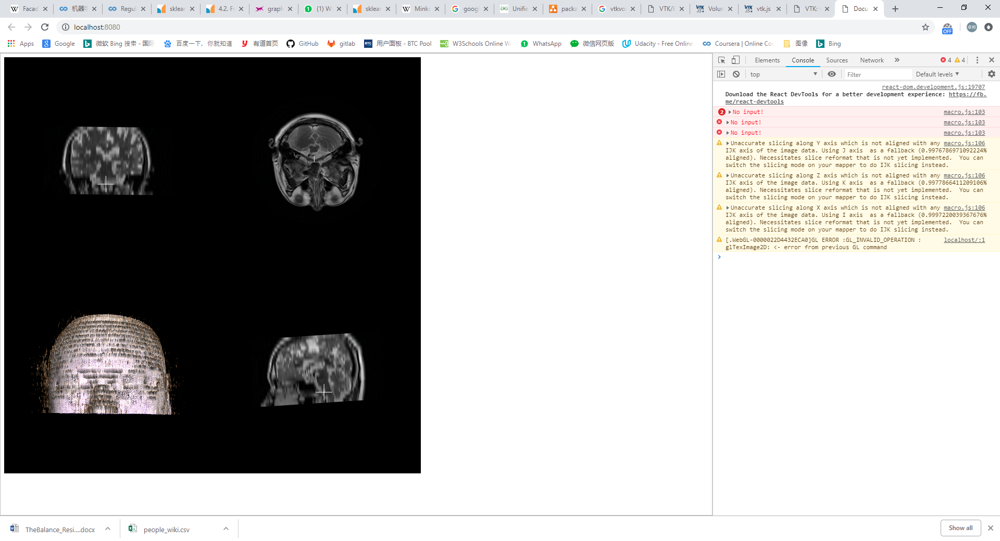

This project is mainly base on the following:
node.js
webpack
react
babel
vtk.js
itk.js
Anything I forgot should be found in package.json.
Anyway it is far from completed.
The following is an image for prototype.
